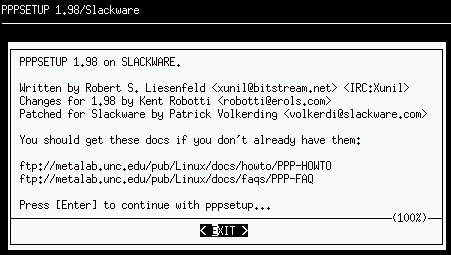

|
PPP Ovaj tekst pomaze korisnicima da naprave PPP konekciju pod Slackware Linux-om. Takodjer, u tekstu je objasnjeno koristenje pppsetup programa kao i fajlova u /etc/ppp direktoriju Vecina ljudi danas je konektovana na Ineternet najcesce kroz neki tip
dialup konekcije. Najcesce to je to PPP. Podesavanje PPP-a
u Slackware Linux-u je prilicno lagana. Ovaj tekst ukljucije jos
nekoliko alata koji pomazu podesavanje PPP-a. Kada to uradite na vasem monitoru trebalo bi se pojaviti sljedece:
 Ovaj program postavit ce vam seriju pitanja, na koja je naravno potrbno odgovoriti sto je tacnije moguce. Bit ce vam postavljena pitanja o modemu , o ISP telefonskom broju i slicnom. Neki uredjaji ce biti pod standardnom, sto mozete prihvatiti u vecini slucajeva. Nakon sto je program pokrenut, on automatski pravi ppp-go program i ppp-off program. Kao sto mozemo zakljuciti ova dva programa se koriste da startuju i stopiraju PPP konekciju. Ova dva programa nalaze se u /usr/sbin direktoriju i potrebne su root privilegije za njihovo pokretanje. /etc/ppp Za vecinu Linux korisnika koristenje pppsetup-a nece predstavljati veci problem. Medjutim moze se lako desiti da se i oni iskusniji Linux korisnici prevare prilikom unosenja nekih vrijednosti. Sve konfiguracijske informacije drze se u /etc/ppp. Spisak razlicitih fajlova koji se koriste za: ip-down Ova skripta je pokrenuta od strane pppd-a nakon sto je
PPP konekcija zavrsena. |